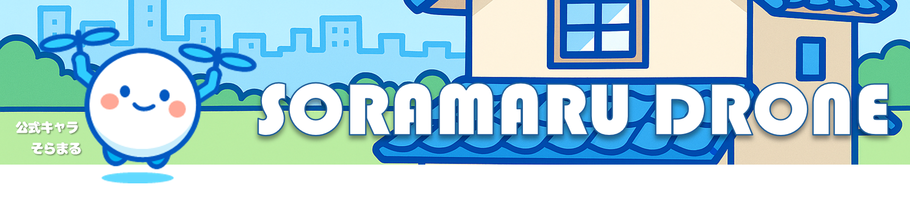
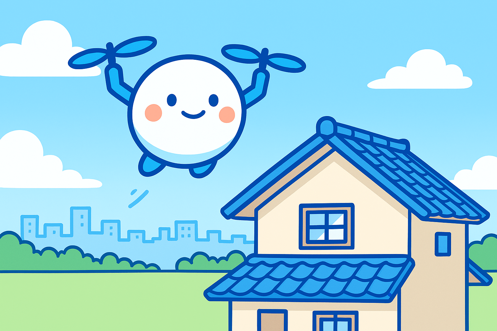

弊社はドローンを活用して様々な分野でお困りごと解決を目指します！

▶ 千葉県空撮記録
▶ 空撮について
▶ 点検について
▶ 空撮補助やります
▶ 使用機体について
▶ 操縦者について
▶ 飛行時の注意点
▶ 会社概要
ようこそ、ソラマルの世界へ！

ドローンは、大切な記憶を空撮で残すこともできるし、点検業務では地上からでは見えない劣化や破損を発見できます。
ソラマルでは、千葉県内を中心に安全第一で空撮・点検サービスを提供します。